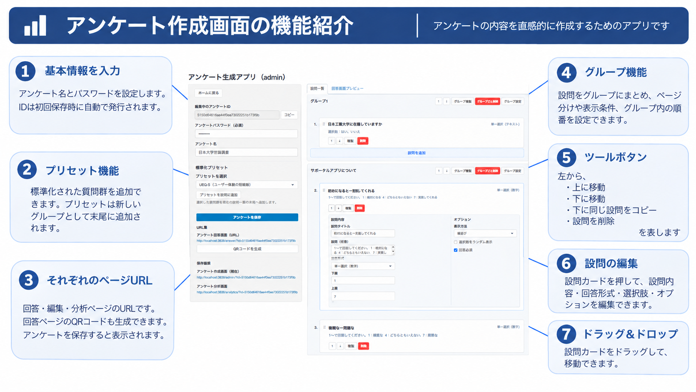
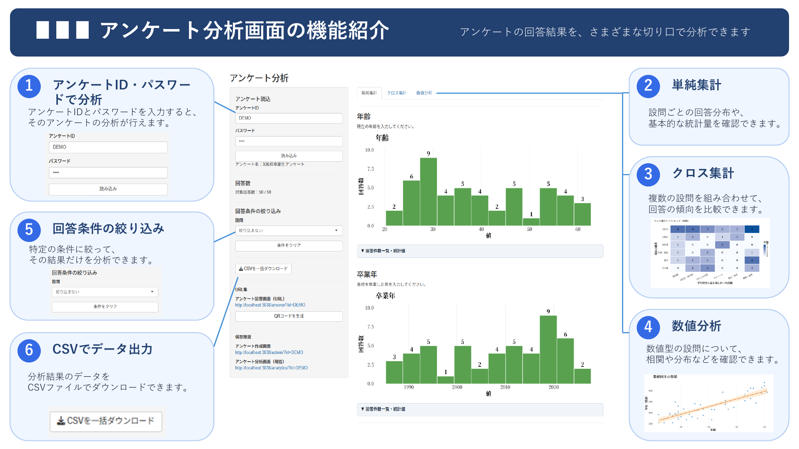

アンケートアプリ 評価実験
以下の手順に沿って、アンケートの作成、回答、分析を体験してください。
操作に迷った箇所や分かりにくかった点も評価の対象です。分からない場合は、そのまま質問してください。
1 アンケートを作成
次の画面を開き、アンケート作成の操作性や機能を確認してください。
http://localhost:3838/admin/設問を3つ程度追加し、自由に設問内容を設定してください。作りたい設問が思い浮かばない場合は、プリセットを使用するか、以下の例を参考にしてください。
設問1
設問形式：択一選択
設問名：あなたの職業はなんですか
選択肢：学生、医師、弁護士、戦士、エンジニア
設問2
設問形式：スライダー
設問名：あなたの年齢をお答えください
下限：0 上限：200
設問3
設問形式：自由記述
設問名：今日の朝ごはんをお答えください
設問を作成し終えたらアンケートを保存し、表示された回答用URLを使って次へ進んでください。

2 回答画面を確認
保存したアンケートの回答用URLを開いてください。
自分で作成したアンケートが表示されます。画面のデザインや、回答までの使いやすさを確認してください。入力内容は自由ですので、回答を送信するところまで行ってください。
3 DEMOデータを分析
こちらで用意したDEMOデータを使用して、分析ページの有用性や使いやすさを確認してください。
http://localhost:3838/analytics/?id=DEMOパスワードに DEMO と入力して、アンケートを読み込んでください。
「X高校卒業生アンケート」というアンケートが表示されます。
確認する機能
- 単純集計
- クロス集計
- 数値分析
それぞれの機能や表示されるグラフを見て、有用性や使いやすさを確認してください。
今回のデータの「年収（数値）」では、1人の回答結果によって平均や数値分析が大きく影響されています。
時間に余裕がある場合は、回答条件の絞り込み機能も試してください。他の回答から大きく離れた数値を除外して、平均や数値分析のグラフがどのように変化するか確認できます。

4 評価アンケート
最後に、今回のアプリの使いやすさや有用性について回答してください。
http://localhost:3838/answer/?id=Q6szOrFOcMQyrpKm